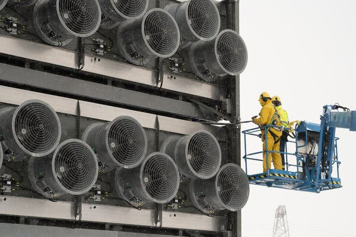

On March 31, The New York Times launched a series titled “Buying Time” in a front-page, above-the-fold article entitled “Can We Engineer Our Way Out of the Climate Crisis?” The first article discusses “direct air capture” technologies, noting:
Although the direct air capture market is still in its infancy, it already has vociferous detractors in academia, activist circles and beyond.
This is a classic example of journalism’s unfortunate tendency to manufacture a conflict to sell a story. If you think about it, this observation doesn’t address the opening question at all, which concerns whether engineering could be a practical solution to climate. While certain academics and activists might also be capable engineers, they’re also individuals with agendas, and the most threatened are also the most vociferous. The article focuses on the conflict itself, so it entertains its audience but fails to educate or inform.

Indeed, several of the article’s direct quotes come from individuals with a vested financial interest in one way or another, even (or perhaps especially) academics. The leaders of selected companies [Climeworks (carbon capture) and Occidental Petroleum (petroleum)] are opposed by selected academics [Alan Robock (Professor of Atmospheric Science, Rutgers) and Lili Fuhr (Center for International Environmental Law, a DC think tank)]. Both companies are building solutions, while both academics cite a business metric (cost) as a reason for rejecting solutions.
In a class by himself, we have an arrogant academic asshole, Mark Z. Jacobson (Professor of Civil and Environmental Engineering, Stanford). He claims that carbon capture technologies are “dangerous distractions from the more urgent work of rapidly reducing the use of fossil fuels” fail to help the problem. He says
“There are many solutions that are just not helpful at all, that do not help an iota for climate and don’t help an iota for air pollution. Among these are direct air capture.”
First of all, as long time readers will appreciate, there simply aren’t many solutions. There are many advocates like Professor Jacobson who, as part of their ivory tower advocacy, think it’s fair game to bad-mouth solutions proposed by others. But, with all due respect, this is not an “either-or” situation; it’s a “both-and”. This unfortunate tendency is the “circular firing squad” of the title—Despite a surplus of deadly weaponry, no one survives.
Let me outline the obvious: if we fail to reduce our annual emissions, we would need to replicate Climeworks’ ambitious installation 1,000,000 times in the next two decades for it to be the sole solution. That is, indeed, an improbable effort. Even if enabled and funded, the approach would not be practical to scale, because the plant is based in sparsely-populated Iceland and driven by the abundant, carbon-free geothermal energy available there. But, should partial solutions be discarded because they might be too expensive for others?
Ask yourself, “Do you trust academics to make accurate business predictions?” In my experience, those individuals with “profit & loss” (P&L) responsibility are worth paying attention to because they have a stake. That doesn’t mean they’re always right or truthful, but it does mean that they are in “the arena” (to channel Teddy Roosevelt 1 ) with a lot more to lose, in contrast with investors who are seeking to profit from bets on a shifting market.
There are two individuals quoted that are worth considering:
Al Gore:
“[P]eople have woken up and are looking to see if there’s any miraculous deus ex machina that can help.”
I can’t identify the unaware “people” he refers to by name or rank, but his reference to the frequently employed plot device ( deus ex machina ) is apt. From a political perspective, having a relatable story is essential, but getting to a happy ending for his “An Inconvenient Truth” story may indeed require a divine miracle.
Marion Hourdequin , Professor of Environmental Philosophy, Colorado College.
There are these much bigger questions around who decides how is this is all coordinated over time…We don’t have a great track record of sustained global cooperation. It’s true that we have been altering the climate through greenhouse gas emissions for centuries now, but trying to intentionally manage the climate through geoengineering would be a distinctive endeavor, quite different than the kind of haphazard interference that we’ve engaged in thus far.
Professor Hourdequin is a public intellectual after my own heart! Like me, she has no dog in the hunt; her future support (as a tenured professor of philosophy) is pretty much assured—no research grants are needed in her department. The semantic distinction she makes separates what we’ve been doing and what we need to do in the future, in a word, “intent.” Climate change happened as the unintended consequence of previous engineering efforts, but does that mean we should block future ones because of it? The rhetorical question is, “If King George III were informed of the unintended consequences of James Watt’s steam engine, namely, changing Earth’s climate in a dozen generations, would we really want him to block its development?”
So, continuing along the philosophical tangent, if engineering is distinguished from unintended consequences by intent, then wouldn’t we want to be intentional about our actions? If so, then we need to embrace geoengineering despite fearmongering by “experts.” Provided that we avoid painting ourselves into a corner, then we can adjust our actions based on new data, rather than being paralyzed by fear.
It is not the critic who counts; not the man who points out how the strong man stumbles, or where the doer of deeds could have done them better. The credit belongs to the man who is actually in the arena, whose face is marred by dust and sweat and blood; who strives valiantly; who errs, who comes short again and again, because there is no effort without error and shortcoming; but who does actually strive to do the deeds; who knows the great enthusiasms, the great devotions; who spends himself in a worthy cause; who at the best knows in the end the triumph of high achievement, and who at the worst, if he fails, at least fails while daring greatly, so that his place shall never be with those cold and timid souls who neither know victory nor defeat.
from Theodore Roosevelt, Citizenship in a Republic , a speech given at the Sorbonne in Paris on April 23, 1910. theodorerooseveltcenter.org